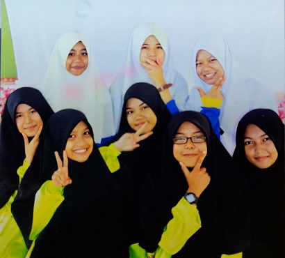
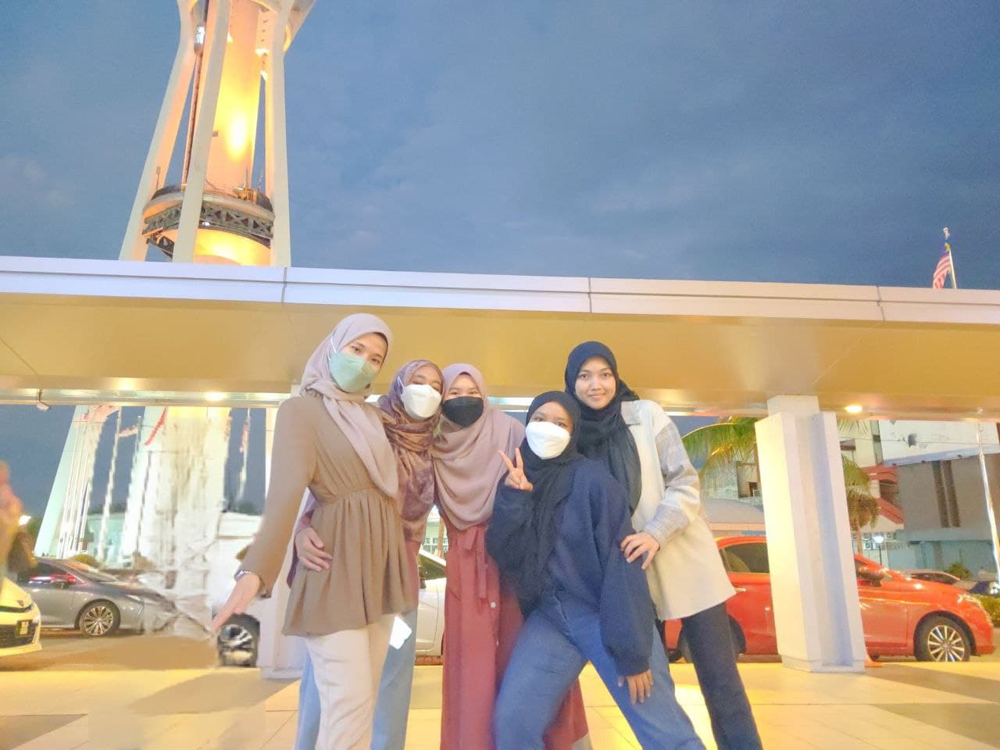
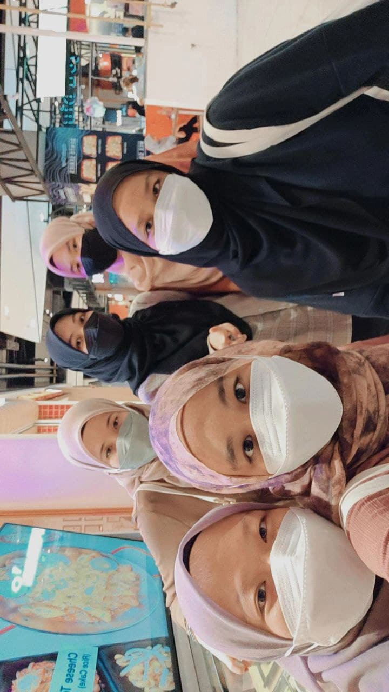

I have some good friends but my closest friends are my high school friends
I consider them as close friends because we went through our teenage years together
and already understand each other's good and bad very well.
Not only that, we even face various twists in our school life.
For me, they play a very significant role in making my school life so wonderful.

This picture was taken around 2015. We were 14 years old at the time.
Every time I look at this picture, I am definitely reminded of my school days.Time flies....


Thankfully, up until now, our relationship are still strong as ever.
We even hang out and try to find time to go out eventhough it is hard to gather with full members.
May Allah protect our relatonship till jannah